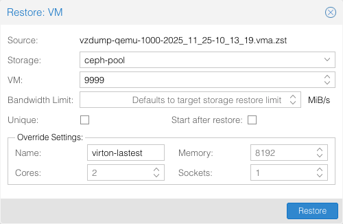
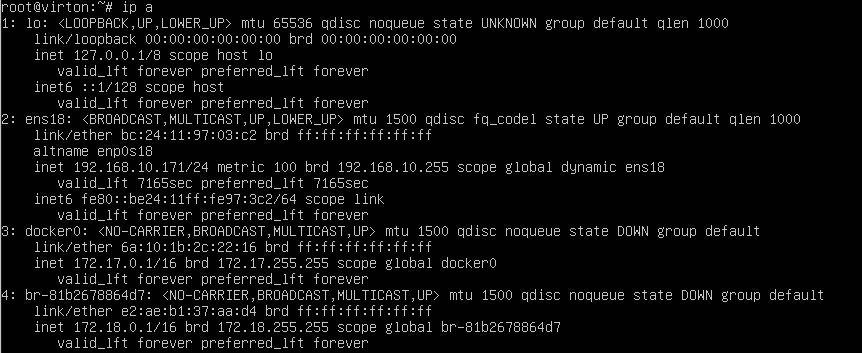

2. 설치 및 구성#
버트온은 백업 파일(
2.1. 백업 파일 배치#
아래 URL을 통해 다운로드한
스토리지 경로 예시 :
local :
/lvar/lib/vz/dump/ceph :
/mnt/pve/<ceph-storage>/dump/Proxmox Backup Server :
/mnt/pve/<storage>/dump/
2.2. VM 복원 수행#
웹 경로 :
Datacenter -> Nodes -> Storage -> Backups
Proxmox 웹 UI에서 스토리지에 업로드된 백업 파일을 선택한 후,

복원할 VM의 옵션을 설정합니다.
Storage : 복원될 VM이 위치할 스토리지를 선택
VM : 현재 사용 중이지 않은 VM ID 입력
Bandwidth Limit(선택사항) : 기본값은 선택한 저장소의 limit(대역폭 제한을 비활성화하려면 ‘0’ 입력)
Unique(선택사항) : MAC 주소 등 고유 속성값 자동 생성
Start after restore(선택사항) : 복원을 마치면 자동으로 시작
Name(선택사항) : VM 이름
Memory(선택사항) : VM 메모리
Cores(선택사항) : VM 코어 수
Sockets(선택사항) : VM 소켓 수
남은 설정은 복원을 마친 후에 진행해도 무방하므로 Storage와 VM 설정이 끝났다면

 CLI의 경우, 다음 명령어를 실행하여 VM 복원을 진행합니다.
CLI의 경우, 다음 명령어를 실행하여 VM 복원을 진행합니다.
qmrestore /mnt/pve/cephfs/dump/vzdump-qemu-<VMID>-<DATE>.vma.zst <NEW_VMID> --storage
2.3. 네트워크 인터페이스 확인#

복원이 완료되었다면, Hardware 탭에서
2.4. 부팅 및 컨테이너 상태 확인#

VM의 전원을 켜고 로그인하여 아래 명령으로 컨테이너 상태를 확인합니다:
docker ps
virton-proxmox-dashboard 컨테이너의 상태(STATUS)가Up(healthy) 라면 정상입니다.
2.5. 웹 접속 확인#

ip a 혹은 ip addr show 를 통해 VM의 IP를 확인합니다. 확인한 IP로 브라우저에 접속합니다.
예 : https://<VM_IP>
’연결이 비공개로 설정되어 있지 않습니다.’라는 안내 팝업이 뜨면 왼쪽 하단의 고급 버튼 -> 안전하지 않음을 눌러 접속합니다.
참고
위 메세지는 브라우저 보안 인증서 목록에 본 시스템의 인증서가 등록되어있지 않아 나오는 것이며, 버트온은자체 서명 인증서(Self-Signed Certificate) 를 사용하여 모든 통신은 SSL 암호화를 통해 보안상 안전하게 접속할 수 있습니다.